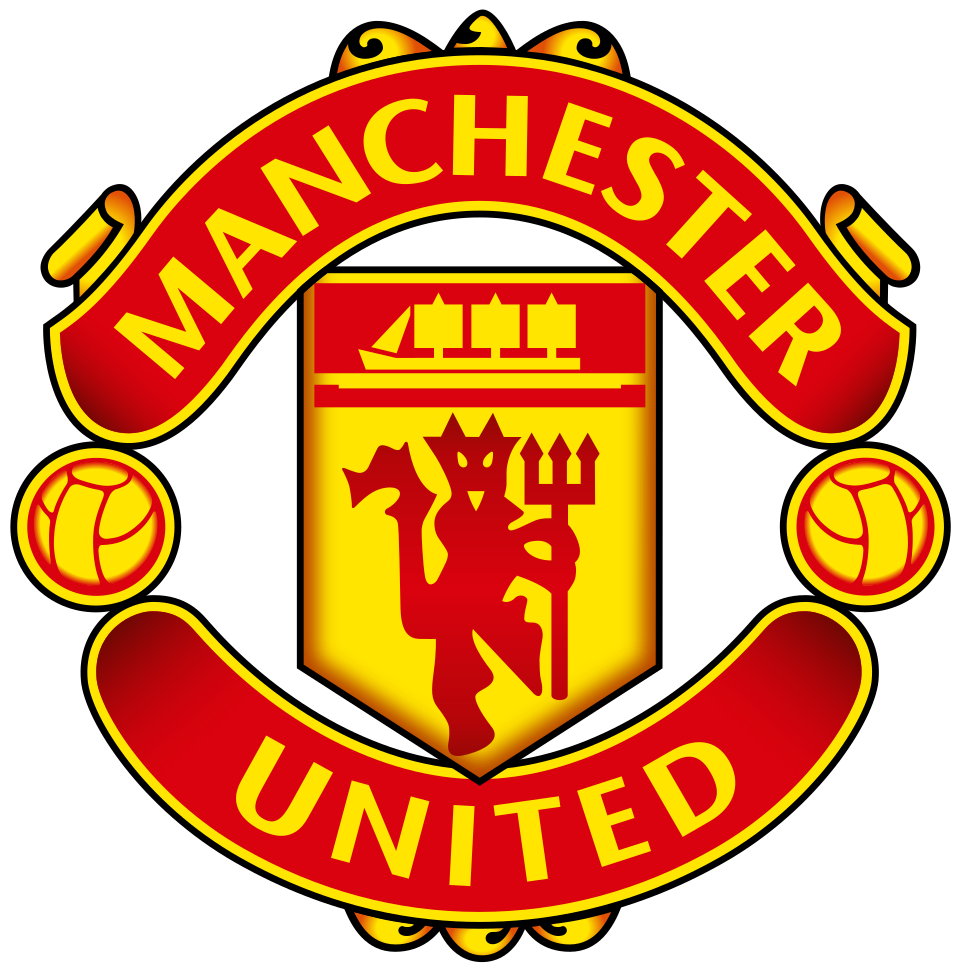

Manchester United

Odkazy
Oficiální web Manchester United
Manchester United na Wikipedii
Informace o klubu
Založení: 1878 (jako Newton Heath LYR FC)
Stadion: Old Trafford
Přezdívka: Red Devils (Rudí ďáblové)